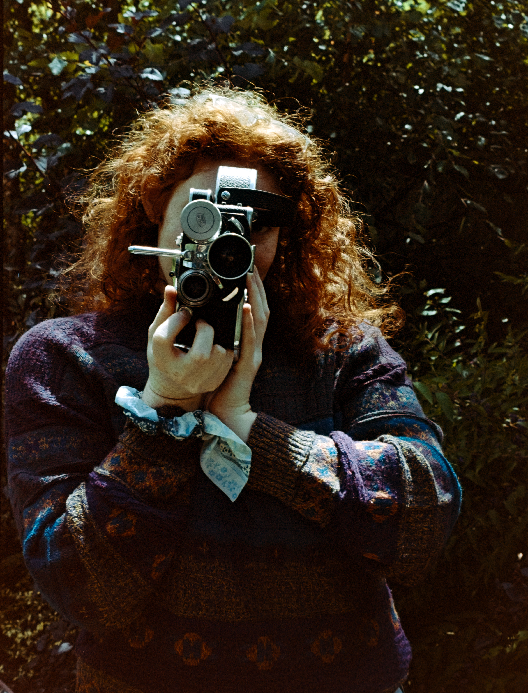

Danielle Vishlitzky is an experimental filmmaker and audio-visual artist based
between Massachusetts and Chicago, IL where she is completing her MFA in Film,
Video, New Media, and Animation at the School of the Art Institute of Chicago.
Often combining analog and digital techniques, her work explores the human body,
family dynamics, and the feeling of being haunted by the land and what lies beneath it.
CV |
Contact Me Here